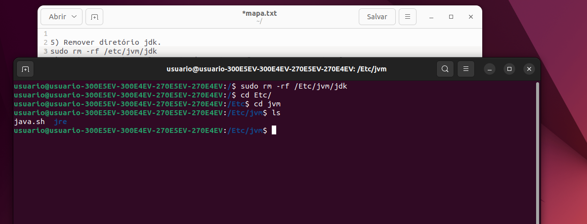

Atividade MAPA
Escreva o comando que é necessário para realizar cada questão, considerando que você está na pasta raiz (/) a cada questão e que você é o super usuário (ou seja, pode acessar tudo):
1) Listar todos os arquivos da pasta professor.
2) Exibir toda a estrutura de pasta do diretório atual.

3) Exibir os processos que estão sendo executados no momento e quanto eles estão ocupando de memória.
4) Exibir qual pasta você está no momento.
5) Remover diretório jdk.
6) Copiar o arquivo aula01.pptx da pasta professor para a pasta aluno.